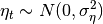

statsmodels.tsa.statespace.structural.UnobservedComponents¶
-
class
statsmodels.tsa.statespace.structural.UnobservedComponents(endog, level=False, trend=False, seasonal=None, cycle=False, autoregressive=None, exog=None, irregular=False, stochastic_level=False, stochastic_trend=False, stochastic_seasonal=True, stochastic_cycle=False, damped_cycle=False, cycle_period_bounds=None, mle_regression=True, **kwargs)[source]¶ Univariate unobserved components time series model
These are also known as structural time series models, and decompose a (univariate) time series into trend, seasonal, cyclical, and irregular components.
Parameters: level : bool or string, optional
Whether or not to include a level component. Default is False. Can also be a string specification of the level / trend component; see Notes for available model specification strings.
trend : bool, optional
Whether or not to include a trend component. Default is False. If True, level must also be True.
seasonal : int or None, optional
The period of the seasonal component, if any. Default is None.
cycle : bool, optional
Whether or not to include a cycle component. Default is False.
ar : int or None, optional
The order of the autoregressive component. Default is None.
exog : array_like or None, optional
Exogenous variables.
irregular : bool, optional
Whether or not to include an irregular component. Default is False.
stochastic_level : bool, optional
Whether or not any level component is stochastic. Default is False.
stochastic_trend : bool, optional
Whether or not any trend component is stochastic. Default is False.
stochastic_seasonal : bool, optional
Whether or not any seasonal component is stochastic. Default is False.
stochastic_cycle : bool, optional
Whether or not any cycle component is stochastic. Default is False.
damped_cycle : bool, optional
Whether or not the cycle component is damped. Default is False.
cycle_period_bounds : tuple, optional
A tuple with lower and upper allowed bounds for the period of the cycle. If not provided, the following default bounds are used: (1) if no date / time information is provided, the frequency is constrained to be between zero and , so the period is constrained to be in [0.5, infinity]. (2) If the date / time information is provided, the default bounds allow the cyclical component to be between 1.5 and 12 years; depending on the frequency of the endogenous variable, this will imply different specific bounds.
Notes
These models take the general form (see [R90] Chapter 3.2 for all details)
where
 refers to the observation vector at time
refers to the observation vector at time  ,
refers to the trend component, refers to the
seasonal component, refers to the cycle, and
,
refers to the trend component, refers to the
seasonal component, refers to the cycle, and
 is the irregular. The modeling details of these
components are given below.
is the irregular. The modeling details of these
components are given below.Trend
The trend component is a dynamic extension of a regression model that includes an intercept and linear time-trend. It can be written:

where the level is a generalization of the intercept term that can dynamically vary across time, and the trend is a generalization of the time-trend such that the slope can dynamically vary across time.
Here  and .
For both elements (level and trend), we can consider models in which:
- The element is included vs excluded (if the trend is included, there must also be a level included).
- The element is deterministic vs stochastic (i.e. whether or not the variance on the error term is confined to be zero or not)
The only additional parameters to be estimated via MLE are the variances of any included stochastic components.
The level/trend components can be specified using the boolean keyword arguments level, stochastic_level, trend, etc., or all at once as a string argument to level. The following table shows the available model specifications:
Model name Full string syntax Abbreviated syntax Model No trend ‘irregular’ ‘ntrend’ Fixed intercept ‘fixed intercept’ Deterministic constant ‘deterministic constant’ ‘dconstant’ Local level ‘local level’ ‘llevel’ Random walk ‘random walk’ ‘rwalk’ Fixed slope ‘fixed slope’ Deterministic trend ‘deterministic trend’ ‘dtrend’ Local linear deterministic trend ‘local linear deterministic trend’ ‘lldtrend’ 
Random walk with drift ‘random walk with drift’ ‘rwdrift’ Local linear trend ‘local linear trend’ ‘lltrend’ Smooth trend ‘smooth trend’ ‘strend’ Random trend ‘random trend’ ‘rtrend’ Following the fitting of the model, the unobserved level and trend component time series are available in the results class in the level and trend attributes, respectively.
Seasonal
The seasonal component is modeled as:
The periodicity (number of seasons) is s, and the defining character is that (without the error term), the seasonal components sum to zero across one complete cycle. The inclusion of an error term allows the seasonal effects to vary over time (if this is not desired, can be set to zero using the stochastic_seasonal=False keyword argument).
This component results in one parameter to be selected via maximum likelihood: , and one parameter to be chosen, the number of seasons s.
Following the fitting of the model, the unobserved seasonal component time series is available in the results class in the seasonal attribute.
Cycle
The cyclical component is intended to capture cyclical effects at time frames much longer than captured by the seasonal component. For example, in economics the cyclical term is often intended to capture the business cycle, and is then expected to have a period between “1.5 and 12 years” (see Durbin and Koopman).
where
The parameter (the frequency of the cycle) is an additional parameter to be estimated by MLE.
If the cyclical effect is stochastic (stochastic_cycle=True), then there is another parameter to estimate (the variance of the error term - note that both of the error terms here share the same variance, but are assumed to have independent draws).
If the cycle is damped (damped_cycle=True), then there is a third parameter to estimate, .
In order to achieve cycles with the appropriate frequencies, bounds are imposed on the parameter in estimation. These can be controlled via the keyword argument cycle_period_bounds, which, if specified, must be a tuple of bounds on the period (lower, upper). The bounds on the frequency are then calculated from those bounds.
The default bounds, if none are provided, are selected in the following way:
- If no date / time information is provided, the frequency is constrained to be between zero and , so the period is constrained to be in .
- If the date / time information is provided, the default bounds allow the cyclical component to be between 1.5 and 12 years; depending on the frequency of the endogenous variable, this will imply different specific bounds.
Following the fitting of the model, the unobserved cyclical component time series is available in the results class in the cycle attribute.
Irregular
The irregular components are independent and identically distributed (iid):
Autoregressive Irregular
An autoregressive component (often used as a replacement for the white noise irregular term) can be specified as:
In this case, the AR order is specified via the autoregressive keyword, and the autoregressive coefficients are estimated.
Following the fitting of the model, the unobserved autoregressive component time series is available in the results class in the autoregressive attribute.
Regression effects
Exogenous regressors can be pass to the exog argument. The regression coefficients will be estimated by maximum likelihood unless mle_regression=False, in which case the regression coefficients will be included in the state vector where they are essentially estimated via recursive OLS.
If the regression_coefficients are included in the state vector, the recursive estimates are available in the results class in the regression_coefficients attribute.
References
[R90] (1, 2) Durbin, James, and Siem Jan Koopman. 2012. Time Series Analysis by State Space Methods: Second Edition. Oxford University Press. Attributes
endog_namesNames of endogenous variables exog_namesinitial_varianceinitializationloglikelihood_burnparam_namesstart_paramstoleranceMethods
filter(params, **kwargs)fit([start_params, transformed, cov_type, ...])Fits the model by maximum likelihood via Kalman filter. from_formula(formula, data[, subset])Not implemented for state space models hessian(params, *args, **kwargs)Hessian matrix of the likelihood function, evaluated at the given impulse_responses(params[, steps, impulse, ...])Impulse response function information(params)Fisher information matrix of model initialize()Initialize (possibly re-initialize) a Model instance. initialize_approximate_diffuse([variance])initialize_known(initial_state, ...)initialize_state()initialize_statespace(**kwargs)Initialize the state space representation initialize_stationary()loglike(params, *args, **kwargs)Loglikelihood evaluation loglikeobs(params[, transformed, complex_step])Loglikelihood evaluation observed_information_matrix(params[, ...])Observed information matrix opg_information_matrix(params[, ...])Outer product of gradients information matrix predict(params[, exog])After a model has been fit predict returns the fitted values. prepare_data()Prepare data for use in the state space representation score(params, *args, **kwargs)Compute the score function at params. score_obs(params[, method, transformed, ...])Compute the score per observation, evaluated at params set_conserve_memory([conserve_memory])Set the memory conservation method set_filter_method([filter_method])Set the filtering method set_inversion_method([inversion_method])Set the inversion method set_smoother_output([smoother_output])Set the smoother output set_stability_method([stability_method])Set the numerical stability method setup()Setup the structural time series representation simulate(params, nsimulations[, ...])Simulate a new time series following the state space model smooth(params, **kwargs)transform_jacobian(unconstrained[, ...])Jacobian matrix for the parameter transformation function transform_params(unconstrained)Transform unconstrained parameters used by the optimizer to constrained untransform_params(constrained)Reverse the transformation update(params, **kwargs)Methods
filter(params, **kwargs)fit([start_params, transformed, cov_type, ...])Fits the model by maximum likelihood via Kalman filter. from_formula(formula, data[, subset])Not implemented for state space models hessian(params, *args, **kwargs)Hessian matrix of the likelihood function, evaluated at the given impulse_responses(params[, steps, impulse, ...])Impulse response function information(params)Fisher information matrix of model initialize()Initialize (possibly re-initialize) a Model instance. initialize_approximate_diffuse([variance])initialize_known(initial_state, ...)initialize_state()initialize_statespace(**kwargs)Initialize the state space representation initialize_stationary()loglike(params, *args, **kwargs)Loglikelihood evaluation loglikeobs(params[, transformed, complex_step])Loglikelihood evaluation observed_information_matrix(params[, ...])Observed information matrix opg_information_matrix(params[, ...])Outer product of gradients information matrix predict(params[, exog])After a model has been fit predict returns the fitted values. prepare_data()Prepare data for use in the state space representation score(params, *args, **kwargs)Compute the score function at params. score_obs(params[, method, transformed, ...])Compute the score per observation, evaluated at params set_conserve_memory([conserve_memory])Set the memory conservation method set_filter_method([filter_method])Set the filtering method set_inversion_method([inversion_method])Set the inversion method set_smoother_output([smoother_output])Set the smoother output set_stability_method([stability_method])Set the numerical stability method setup()Setup the structural time series representation simulate(params, nsimulations[, ...])Simulate a new time series following the state space model smooth(params, **kwargs)transform_jacobian(unconstrained[, ...])Jacobian matrix for the parameter transformation function transform_params(unconstrained)Transform unconstrained parameters used by the optimizer to constrained untransform_params(constrained)Reverse the transformation update(params, **kwargs)Attributes
endog_namesNames of endogenous variables exog_namesinitial_varianceinitializationloglikelihood_burnparam_namesstart_paramstolerance